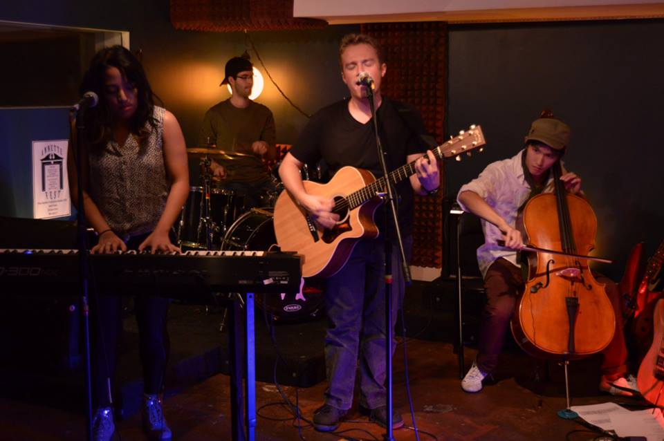
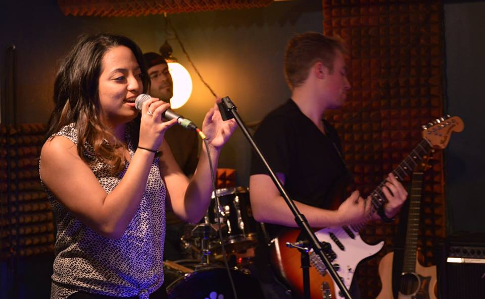
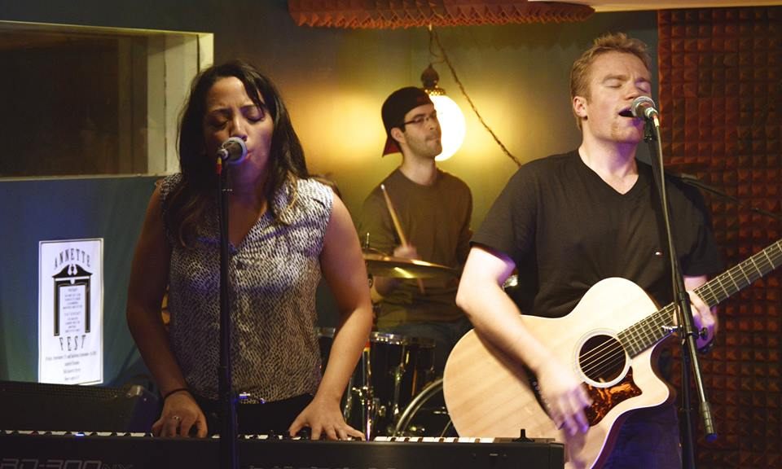

Article By Imani Walker Photos by Premila D'Sa
Uploaded on December 5, 2015
From the tiny stage at the Ram in the Rye comes a tune that has every bar-goer singing and every waitress smiling – it’s the theme song from “Friends” sung by friends, Maricris Rivera and Victor Copetti.
The two fourth-year students are veterans to the stage, having performed together in their band Maricris and Victor since their second year at Ryerson University.
“She came up to me at an open mic and was like, “Do you know ‘Falling Slowly’ from Once?” and I said yes and then we performed it together,” says Copetti, describing how the duo formed.
When performing, both Rivera and Copetti sing – forming beautiful melodies which is usually accompanied by a piano. Copetti also plays the guitar.
“One of my favourite things to do is to take a song that’s popular – like a pop song, and totally change the genre or make it a stripped down version,” says Rivera, whose passion for music arose from a musical theatre background.
|
Copetti, who found his passion for music in high school, describes Rivera’s music style as soulful, while he enjoys funk and folk-pop. Together they create a dynamic sound that indulges in soul, funk, folk-pop and recently, punk. “The type of music we play is versatile, we don’t stick to a genre - we try to be all over the place. It’s not like we’re creating our own genre – it’s that we’re taking aspects from different genres that we really like and we roll with it,” says Copetti, with Rivera nodding in agreement. One of their most recent performances was at Ryerson’s Darkness Concert where musicians played for an audience in complete darkness. While most people can barely make it safely from their light switch to their bed in the dark, Rivera and Copetti learned to play an entire set without sight. |
 |

Spotlight Editor in Chief
Alina Bykova
alina.bykova@ryerson.ca
Want to get your time under the lights? Are you a writer looking to join the Artist Spotlight initiative? E-mail us at music@ryerson.ca to see how!